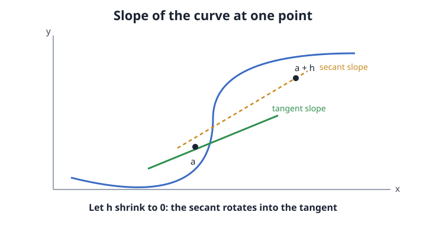

Track 2: Functions, change, and reasoning
The derivative: the slope at an instant
A curve has a different steepness everywhere, so what does its slope at one exact point even mean?
Picture the idea

Your fitness app plots distance run against time as a curving line, faster on the downhill, slower on the climb. The pace it shows at 8 minutes is the slope of that distance curve at that single instant, not the average over the whole run.
The derivative is a speedometer reading. The odometer is the function and the speedometer is the slope right now, the rate the odometer is changing at this exact moment rather than the trip's overall average.
Move the reading from the steep downhill stretch to the flat warm-up. The same definition applies, the limit still exists, and the slope it returns drops toward zero where the curve flattens.
Core Ideas
Between two points on a curve you can always take an ordinary slope, rise over run. Call the points a and a + h. The slope of the line through them, the secant, is
(f(a + h) − f(a)) / h.
That is an average rate over a gap of width h. To get the rate exactly at a, shrink the gap. As h approaches 0 the secant rotates until it grazes the curve at a, the tangent line. The slope it settles on is the derivative:
f'(a) = lim_{h→0} (f(a + h) − f(a)) / h.
This needs a limit, not plain division, because at h = 0 the formula reads 0/0, which says nothing. The limit asks where the ratio is heading as the gap closes, sidestepping the undefined point itself. Working the case f(x) = x² at a = 3:
| h | (f(3+h) − f(3))/h |
|---|---|
| 1 | (16 − 9)/1 = 7 |
| 0.1 | (9.61 − 9)/0.1 = 6.1 |
| 0.01 | (9.0601 − 9)/0.01 = 6.01 |
The ratios head toward 6, so f'(3) = 6. The algebra confirms it: the ratio simplifies to 6 + h, which goes to 6 as h → 0.
Why can you not set h = 0 in (f(a + h) − f(a))/h to get the instantaneous slope directly?
- At
h = 0the expression is0/0, which is undefined, so you read where the ratio heads as h shrinks instead. - Setting h = 0 gives the average slope, not the instantaneous one.
- h must stay positive because distance cannot be negative.
- You can set h = 0; the textbook limit is only a formality.
Numerator and denominator both vanish at h = 0, giving the indeterminate 0/0. The limit reports the value the ratio approaches without ever evaluating at 0. The "it is only a formality" distractor misses that the value at 0 genuinely does not exist.
Where this shows up
The shuttle-tracker app on your phone draws the bus's distance-from-stop as a curve while it crawls through traffic and then opens up on the bypass. The speed it reports at any second is the derivative of that distance curve, the slope right at that tick of the clock.
The speedometer reading exists only where the curve is smooth. At a sharp corner, like the instant the bus slams to a stop, the curve has a kink, the secants from the left and right settle on different slopes, and the single derivative is undefined there.
Figure it out from scratch
Start With a Real Question
How steep is a curve at one exact point?
- average slope misses the instant
- need the rate right here
Say It in Plain Words
Take a nearby slope, then shrink the gap to nothing.
- secant first
- tangent in the limit
What It Is Made Of
A point a, a gap h, two outputs, one limit.
- gap h sets the second point
- limit removes the gap
Now Write the Equation
f'(a) = lim_{h→0} (f(a+h) − f(a))/h
- ratio is an average rate
- limit makes it instantaneous
Try the Simplest Case
Differentiate x² at a = 3.
- ratio simplifies to
6 + h - limit gives
f'(3) = 6
Find Where It Breaks
A kink has no single tangent.
- left and right slopes differ
- limit fails at the corner
Explain It to a Friend
The derivative answers how steep a curve is at one exact point. You start with the slope between that point and a neighbour a small gap h away, which is an average rate over that gap. Then you shrink h toward zero so the neighbour slides in and the secant becomes the tangent that grazes the curve. For x squared at the point 3 the ratio simplifies to 6 plus h, which heads to 6 as the gap closes, so the slope there is 6. It breaks at a sharp corner, where the slopes coming from the two sides disagree and no single tangent exists.
How to reason about this
Check your understanding
- Why does the secant slope have to be an average rate, while the derivative is an instantaneous one?
- For
f(x) = x², why does the difference ratio simplify to2a + hbefore the limit is taken? - What feature of a graph guarantees the left-hand and right-hand secant slopes will not agree, so no derivative exists at that point?
Show you understand
Take f(x) = x² at a = 5 and build the table of difference ratios for h = 1, 0.1, 0.01. Predict the limit before you compute the last row, then confirm the algebra gives 2a = 10, and stress it by trying a point where the curve has a corner.
Build it yourself
Estimate the instantaneous rate of a real curve from your own logged data by shrinking the gap.
- Gather a short series of real readings over time: a run's distance every minute from a fitness app, or a phone battery percentage every few minutes.
- Pick one instant a, then compute the average rate over a 2-step gap, a 1-step gap, and the smallest gap your data allows.
- Predict the instantaneous rate by watching those averages converge, then check it against the steepness you can see by eye on the plotted curve at a.
- Sanity-check against a known anchor: pick a flat stretch where the reading barely changes and confirm your estimated rate sits near zero.
You have it when your three shrinking-gap averages line up on a single value and that value matches the visible slope at a within your reading error.
Push further: repeat at a point right after a sudden stop or spike and show the left-gap and right-gap averages refuse to agree, so no single rate exists there.
| Criterion | Weak | Strong |
|---|---|---|
| Gap shrinking | uses one gap only | computes three shrinking gaps and watches them converge |
| Interpretation | reports a number with no units or meaning | names the rate and its units at the instant |
| Boundary | ignores kinks | shows where the two-sided averages disagree |
Pass threshold: all three rows at Strong, and your converged value matches the visible slope at a.
Weak answer example: "The rate is (end − start)/(total time)." That is the whole-trip average, which can be far from the rate at the chosen instant on a curve that speeds up and slows down.
If your averages do not converge: shrink the gap further around the same instant a, and confirm you are holding a fixed while only h changes, before moving on.
Practice in Levels
Worked
Find f'(2) for f(x) = x². The ratio is ((2+h)² − 4)/h = (4 + 4h + h² − 4)/h = 4 + h. As h → 0 this heads to 4, so f'(2) = 4.
Faded
Find f'(4) for f(x) = x². The ratio is ((4+h)² − 16)/h. Expand the square: (16 + ____ + h² − 16)/h. Simplify to ____ + h. The limit as h → 0 is ____.
Worked solution
(16 + 8h + h² − 16)/h = 8 + h, which heads to 8, so f'(4) = 8. Note it equals 2a = 2(4).
Independent
Use the difference ratio to find f'(a) for f(x) = x² at a general point a, and state the pattern.
Model answer
The ratio is ((a+h)² − a²)/h = (2ah + h²)/h = 2a + h, whose limit as h → 0 is 2a. So the slope at any point of x² is twice the x-coordinate.
Transfer
A water tank's volume follows V(t) = 3t litres, a straight line, not a curve. The original case had a bending parabola whose slope changed everywhere; here the graph is straight. Find the instantaneous fill rate at t = 5 and explain why it equals the average rate over any interval, unlike the parabola.
Rubric
The ratio is (3(5+h) − 15)/h = 3h/h = 3 for every h, so V'(5) = 3 litres per minute. The invariant is the limit-of-the-ratio method; the changed surface is a constant slope. Full credit explains that a line has one slope everywhere, so secant equals tangent for any gap and the limit is trivial.
Module check
Each question targets why the derivative behaves as it does.
For f(x) = x² the difference ratio at a is 2a + h. What does the leftover + h represent, and why does dropping it give the derivative?
- The +h is the error from using a finite gap; sending h to 0 removes that error and leaves the true instantaneous slope 2a.
- The +h is a rounding artifact with no meaning.
- The +h means the derivative is always slightly larger than 2a.
- You keep the +h, so the derivative is 2a + h for small h.
The +h is exactly how much the secant over a gap of width h overshoots the tangent slope. The limit drives it to zero, leaving 2a. The "keep the +h" distractor confuses an approximation with the exact limit value.
On a distance-versus-time curve, the tangent at one instant is flat (slope 0). What is happening at that instant?
- The object is momentarily not moving, since a zero slope means distance is not changing at that instant.
- The object is moving at constant top speed.
- The graph has ended.
- The object is accelerating fastest there.
Slope of distance against time is speed, so a zero slope is zero speed, a momentary stop or turnaround. The "top speed" distractor reverses the meaning; top speed is where the curve is steepest, not flattest.
A runner's distance graph has a sharp corner at the second they trip and stop dead. Why is the derivative undefined exactly there?
- The secant slopes approaching from the left and from the right settle on different values, so no single limit, and no single tangent, exists.
- The function is not defined at that point.
- The distance is zero at that point.
- Derivatives are never defined for runners.
A kink makes the left-hand and right-hand limits of the difference ratio disagree, so the two-sided limit fails. The function value can be perfectly well defined at the corner; it is the matching of slopes from both sides that fails.
For the straight line f(x) = 3x, what is f'(a) at every point, and why does it not depend on a?
- It is 3 everywhere, because the difference ratio is
3h/h = 3for any gap, so the limit is 3 regardless of a. - It is 3a, scaling with the point.
- It is 0, because lines have no curvature.
- It is undefined, because there is no curve to graze.
A line has one constant slope, so the secant over any gap already equals that slope and the limit is trivially 3. The "3a" distractor borrows the parabola's a-dependence, which only appears because that curve bends; a line does not.
As h shrinks from 1 to 0.1 to 0.01, the difference ratios for x² at a = 3 read 7, 6.1, 6.01. What can you conclude, and what would make this conclusion unsafe?
- They converge to 6, so
f'(3) = 6; the conclusion would be unsafe if the curve had a corner at 3, where the values would not settle. - They converge to 7, the first value, since that used the largest gap.
- Nothing can be concluded from only three values.
- The ratio diverges because the numbers keep changing.
The trend 7, 6.1, 6.01 clearly heads to 6, matching 2a = 6, so the slope is 6. The safety caveat is a kink at a, where left and right ratios split and no limit forms. The "converge to 7" distractor mistakes the coarsest estimate for the limit.